Богликмас тажрибалар кетма-кетлиги
Хар бирида А ходиса рўй бериши (муваффакият) хам, рўй бермаслиги (муваффакиятсизлик) хам мумкин бўлган n та богликмас тажрибалар амалга оширилсин. А ходисанинг хар бир тажрибадаги эхтимоллигини бир хил, яъни р га тенг деб хисоблаймиз. Демак, А ходиса рўй бермаслигининг эхтимоллиги хам хар бир тажрибада доимий ва q=1–p га тенг. Тажрибаларнинг бундай кетма-кетлиги Бернулли схемаси деб аталади.
Бундай тажрибаларга мисол сифатида, масалан, технологик ва ташкилий шарт-шароитларнинг доимийлиги холатида маълум бир ускуналарда махсулотларни ишлаб чикаришни караш мумкин, бу холда ярокли махсулотни тайёрлаш — муваффакият, яроксизини тайёрлаш — муваффакиятсизлик. Агар бирор махсулотни тайёрлаш жараёни аввалги махсулотларнинг ярокли ёки яроксиз эканлигига боглик эмас деб хисобланса, бу вазият Бернулли схемасига мос келади.
Бошка мисол сифатида нишонга карата ўк узишни олиш мумкин. Бу ерда ўкнинг нишонга тегиши — муваффакият, нишонга тегмаслиги — муваффакиятсизлик.
n та тажрибада А ходиса роппа-роса k марта рўй бериши ва демак, —nk марта рўй бермаслиги, яъни k та муваффакият ва —nk та муваффакиятсизлик бўлишининг эхтимоллигини хисоблаш масаласи кўйилган бўлсин.
Кидирилаётган эхтимолликни 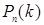 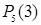
п та богликмас
тажрибалар кетма-кетлигини п та богликмас ходисалар кўпайтмасидан иборат
бўлган мураккаб ходиса деб караш мумкин. Демак, п та тажрибада А ходиса
k марта рўй бериши ва —nk марта рўй бермаслигининг эхтимоллиги богликмас ходисаларнинг эхтимолликларини кўпайтириш хакидаги
3-теоремага асосан 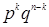 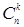
Бу мураккаб ходисалар биргаликда бўлмагани учун биргаликда бўлмаган ходисаларнинг эхтимолликларини кўшиш хакидаги 1-теоремага асосан изланаётган эхтимоллик мумкин бўлган барча мураккаб ходисалар эхтимолликларининг йигиндисига тенг. Бу мураккаб ходисаларнинг эхтимолликлари бир хил бўлгани учун изланаётган эхтимоллик (п та тажрибада А ходисанинг k марта рўй бериш эхтимоллиги) битта мураккаб ходисанинг эхтимоллигини уларнинг сонига кўпайтирилганига тенг
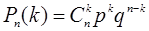
ёки
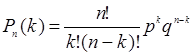
Хосил килинган формула Бернулли формуласи деб аталади.
1-мисол. Бир суткада электр куввати сарфининг белгиланган
меъёрдан ортиб кетмаслиги эхтимоллиги 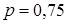
Ечиш.
6 сутканинг хар бирида электр кувватининг меъёрда сарфланишининг эхтимоллиги
ўзгармас ва га
тенг. Демак, хар бир суткада электр кувватининг меъёрдан ортик сарфланишининг эхтимоллиги
хам ўзгармас ва 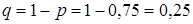
Изланаётган эхтимоллик Бернулли формуласига асосан
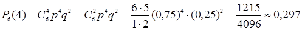
га тенг бўлади.
Катор масалаларда муваффакиятларнинг энг эхтимолли
сонини, яъни эхтимоллиги (4.1) эхтимолликлар ичида энг каттаси бўлган муваффакиятларнинг
сони 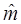 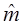
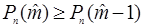
ва
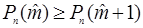
муносабатлар ўринли бўлиши керак.
(4.1) формуладан ва 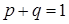
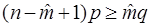
ва
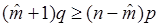
тенгсизликларни оламиз.
Пировард натижада 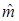
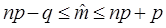
Бирок, таъкидлаб ўтиш жоизки, Бернулли формуласини п нинг катта кийматларида кўллаш анча кийин, чунки формула жуда катта сонлар устида амаллар бажаришни талаб килади.
Масалан, 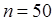 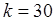 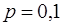 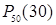 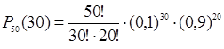 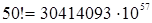 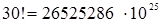 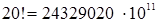
Бундай савол тугилиши табиий: бизни кизиктираётган эхтимолликни Бернулли формуласини кўлламасдан хисоблаш хам мумкинми? Мумкин экан. Лапласнинг локал теоремаси тажрибалар сони етарлича катта бўлганда ходисанинг n та тажрибада роппа-роса k марта рўй бериши эхтимоллигини такрибий хисоблаш учун асимптотик формула беради.
Лапласнинг локал теоремаси. Агар хар бир тажрибада А ходисанинг рўй бериш эхтимоллиги р ўзгармас бўлиб, ноль ва бирдан фаркли бўлса, у холда п та тажрибада А ходисанинг роппа-роса k марта рўй беришининг эхтимоллиги такрибан (п канча катта бўлса, шунчалик аник)
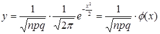
функциянинг 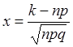
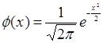 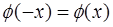 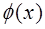
Шундай килиб, п та богликмас тажрибада А ходисанинг роппа-роса k марта рўй бериш эхтимоллиги такрибан
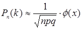
га тенг, бу ерда 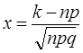
2-мисол. Агар хар бир тажрибада А ходисанинг рўй бериш эхтимоллиги 0,2 га тенг бўлса, 400 та тажрибада бу ходисанинг роппа-роса 80 марта рўй бериши эхтимоллиги топилсин.
Ечиш. Шартга кўра 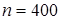 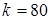 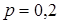 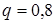
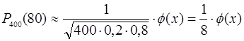
х нинг мисол шартлари оркали аникланадиган кийматини хисоблаймиз:
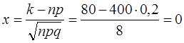
Жадвалдан 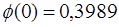
Изланаётган эхтимоллик 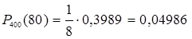
Бернулли формуласи хам тахминан шу натижага олиб келади (хисоблашлар узундан-узок бўлгани учун келтирилмади):
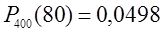
Энди п та тажрибада А ходисанинг
камида 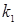 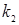 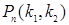
Лапласнинг интеграл теоремаси. Агар хар бир тажрибада А ходисанинг рўй бериш эхтимоллиги
р ўзгармас бўлиб, ноль ва бирдан фаркли бўлса, у холда п та тажрибада А ходисанинг
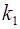 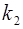
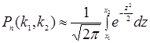
бу
ерда 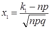 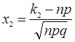
Лапласнинг интеграл теоремасини кўллашни талаб этувчи масалаларни ечишда интеграли учун махсус жадвалдан фойдаланилади. Жадвалда функциянинг кийматлари учун берилган, учун эса функциянинг ток эканлигидан фойдаланамиз, яъни . функция кўпинча Лаплас функцияси дейилади.
Шундай килиб, п та богликмас тажрибада А ходисанинг дан мартагача рўй бериши эхтимоллиги
(4.9)
га тенг, бу ерда ва.
3-мисол. Ташкилотнинг солик инспекцияси текширувидан ўтмаслигининг эхтимоллиги га тенг. Тасодифан олинган 400 та ташкилотдан 70 тадан 100 тагачаси текширувдан ўтмаслигининг эхтимоллиги топилсин.
Ечиш. Шартга кўра ; ; ; ; . (4.9) формуладан фойдаланамиз:
.
Интеграллашнинг куйи ва юкори чегараларини хисоблаймиз:
;
.
Шундай килиб, куйидагини хосил киламиз
.
функциянинг кийматлари жадвалидан ; эканлигини топамиз.
Изланаётган эхтимоллик куйидагига тенг
.
1-мавзуда таъкидлаб ўтилганидек, эхтимолликнинг
статистик таърифига асосан эхтимоллик сифатида нисбий частотани олиш мумкин,
шунинг учун улар орасидаги
фаркни бахолаш кизикиш уйготиши мумкин.  нисбий
частотанинг ўзгармас р эхтимолликдан четланиши абсолют киймати бўйича аввалдан бе-рилган сондан катта
бўлмаслигининг эхтимоллиги
нисбий
частотанинг ўзгармас р эхтимолликдан четланиши абсолют киймати бўйича аввалдан бе-рилган сондан катта
бўлмаслигининг эхтимоллиги
(4.10)
га тенг.
4-мисол. Деталнинг ностандарт бўлиши эхтимоллиги га тенг. Тасодифан танланган 400 та деталь ичида ностандарт деталлар бўлиши нисбий частотасининг эхтимолликдан четланиши абсолют киймати бўйича 0,03 дан катта бўлмаслигининг эхтимоллиги топилсин.
Ечиш. Шартга кўра ; ; ; .
эхтимолликни топиш талаб килинади.
(4.10) формуладан фойдаланиб, куйидагини хосил киламиз
.
Жадвалдан  ни топамиз.
Демак, . Шундай килиб,
изланаётган эхтимоллик такрибан 0,9544 га тенг.
ни топамиз.
Демак, . Шундай килиб,
изланаётган эхтимоллик такрибан 0,9544 га тенг.
Хосил килинган натижанинг маъноси куйидагича: агар етарли даражада кўп марта текшириш ўтказилиб, хар бир текширишда 400 тадан деталь олинса, у холда бу текширишларнинг тахминан 95,44 % ида нисбий частотанинг ўзгармас эхтимолликдан четланиши абсолют киймати бўйича 0,03 дан катта бўлмайди.
Назорат учун саволлар:
1. Бернулли схемаси деб нима аталади?
2. Бернулли формуласи кандай келтириб чикарилади?
3. Муваффакиятларнинг энг эхтимолли сони кандай топилади?
4. Лапласнинг локал теоремасида нима хакида гап боради?
5. Лапласнинг интеграл теоремасида нима хакида гап боради?
6. Нисбий частотанинг ўзгармас эхтимолликдан четланишининг эхтимоллиги кандай топилади?